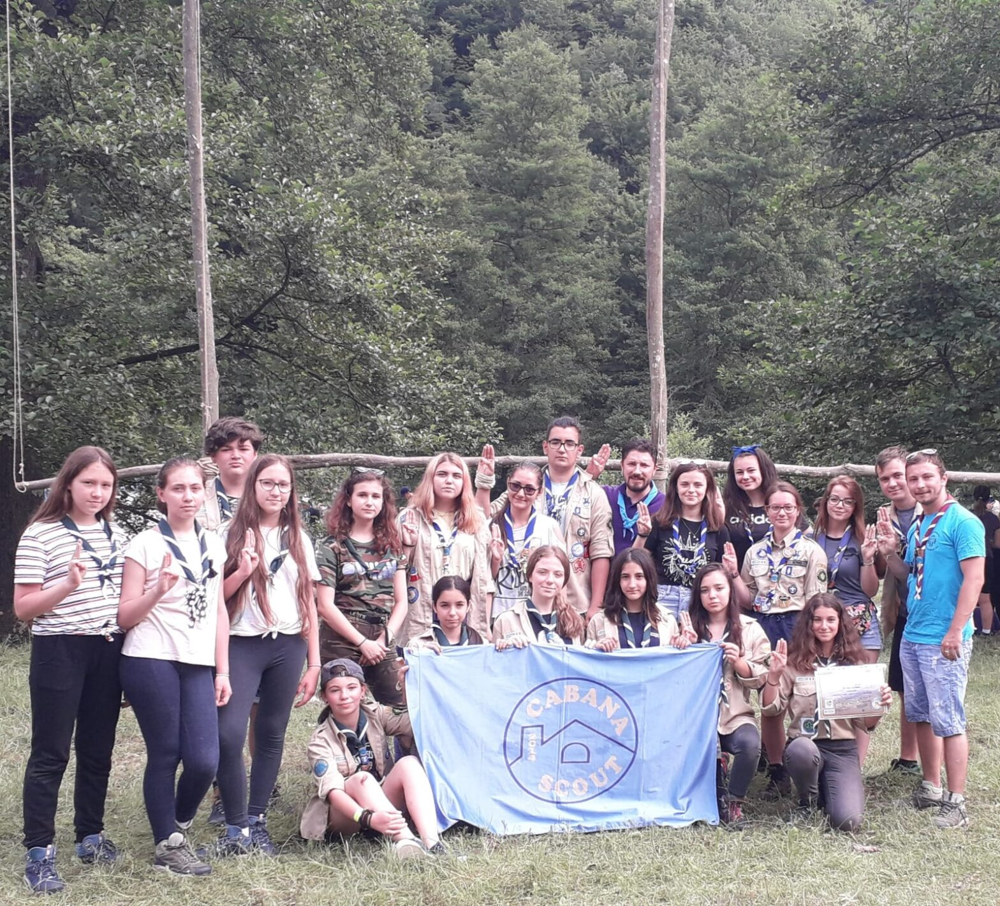

Am fost din nou la Cupă!

Al doilea an de Cupa Izvoarelor pentru mine! O nouă experiență frumoasă și o nouă șansă de a cunoaște oameni frumoși și prietenoși.
Prima zi: de dimineață ne-am întâlnit cu toții la Universitatea Carol I, unde ne-am îmbarcat în autocare și am plecat spre Cupă. Drumul a fost relativ scurt, cu multe cântece și discuții captivante. Odată ajunși acolo cineva ne-a arătat locul unde vom campa și unde i-am lăsat pe toți, iar eu cu Petre am plecat să facem înscrierea. După niște probleme administrative cu plata drumului și puțin cu înscrierea, am reușit să ne înscriem, după care ne-am pus și corturile și am așteptat deschiderea Cupei.
A doua zi a început în forță deoarece aveam traseul pe munte, ne-am trezit cu toții de dimineață și am pus masa, mâncând ce mai aveam de acasă. După un energiser bun am împărțit mâncarea pentru hike și ne-am așteptat rândul să plecăm pe traseu. Traseul, trecând peste faza în care ne-am pierdut de potecă (cică a fost ceva probleme cu un semn și de aceea ne-am pierdut noi și încă câteva patrule) a fost unul relativ scurt și simplu, dar cu o coborâre complet groaznică ce a lăsat ca victime pantalonii multor colegi de ai mei (Alina, Filip, etc) și probabil a mai multor cercetași. Finalul ne-a surprins total, fiindcă nu ne așteptăm să trebuiască să trecem printr-un pârâu cu picioarele goale, unde câțiva au căzut în el, iar eu m-am tăiat la picior, dar am trecut cu toții peste această zi cu peripeții.
A treia zi a fost una relativ dură pentru mine și câțiva colegi de-ai mei. Ne-am trezit nu prea bine, cu o stare de greață groaznică, care nu ne-a lăsat să facem prea multe în acea zi, dar, în schimb cei care s-au simțit bine au avut o zi destul de productivă, participând la tot felul de ateliere și jocuri unde au învățat multe lucruri folositoare. La sfârșitul zilei, o ploaie puternică, alături de o creștere considerabilă a râului a făcut ca prezentările momentelor artistice să se petreacă în subcampuri și, bineînțeles, să ne ia toată mâncarea ce o aveam pusă la rece în râu (mulțumesc frumos râule!).
A patra zi a fost una lejera, unde ne-am trezit la ore decente, ne-am strâns bagajul și corturile, am luat parte la festivitatea de închidere, după care ne-am urcat cu toții în autocare și am plecat direct spre București.
Îmi pare bine ca am avut în patrula noastră și o fată de la Cercetașii Marini, cu care ne-am împrietenit și ne-am înțeles super bine! Sper sa ne mai vedem și în alte locuri sau circumstanțe! (P. S. Cred ca e din partea tuturor când zic toate astea)
Mihai, explorator
Cupa Izvoarelor a fost o experiență nouă, dar și una dintre cele mai frumoase. Am avut ocazia să devin un cercetaș mai bun și să mă distrez împreuna cu cercetași din toată țara.
În acest camp, am înțeles ce înseamnă munca în echipă și am învățat să prețuiesc chiar și mai mult orice prietenie. Cu fiecare zi mă simțeam și mai plină de fericire și iubire. Nimeni nu era singur niciodată, iar împreună reușeam să zâmbim în orice moment.
În hike, cântecele noastre ne ghidau spre succes, iar râsul nostru răsuna pe poteci și ne răspândea bucuria. Chiar dacă acest camp a trecut repede, amintirile vor rămâne mult timp de acum încolo.
Sofi, temerar